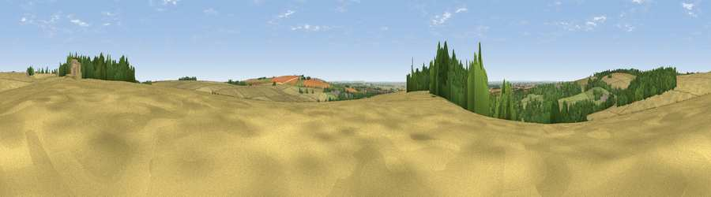

Viewpoint near Londesborough
#24568 in England · top 59% of its area beats it · near LondesboroughThe view, rendered

A 360° render of this exact spot computed from the terrain model, tree cover and land cover — summer colours, afternoon light, calibrated against photographs of famous viewpoints. Real trees, hedges and buildings will differ in detail.
The panorama
Grey silhouette: terrain skyline in each direction (720 bearings, Earth curvature and refraction included). Dashed green: skyline with trees (+15 m) and buildings (+8 m) as obstacles. Blue strip: how far the ground is visible on each bearing.
Where the view opens
Wedge length = distance to the farthest visible ground on that bearing (vegetation-aware). Rings at 10, 25 and 50 km.
What fills the view
57% cropland · 22% woodland · 20% grassland · 1% built-up
Angular shares of the visible panorama (visual magnitude), not map area. Landscape diversity 0.45 (0–1 Shannon).
Key numbers
More beautiful places nearby
The staircase of upgrades: each row has a higher view potential than everything closer. Driving times are estimates from straight-line distance, calibrated against real road routing — check an actual route before setting out.
| Place | Direction | Drive | Score |
|---|---|---|---|
| Viewpoint near Nunburnholme | NW · 3 km | ~8 min | 68.5 |
| Viewpoint near Millington | NW · 11 km | ~21 min | 69.7 |
| Viewpoint near Bishop Wilton | NW · 13 km | ~23 min | 71.5 |
| Garrowby Hill (A166 crest) | NW · 14 km | ~25 min | 71.9 |
| Viewpoint near Acklam | NNW · 18 km | ~31 min | 73.8 |
| Beacon Hill | NE · 39 km | ~58 min | 79.1 |
| Viewpoint near Speeton | NE · 39 km | ~59 min | 80.0 |
| Olivers Mount | NNE · 44 km | ~65 min | 80.3 |
53.89562, -0.65131 · source: screening · position refined by local search. Computed location — check access rights before visiting.